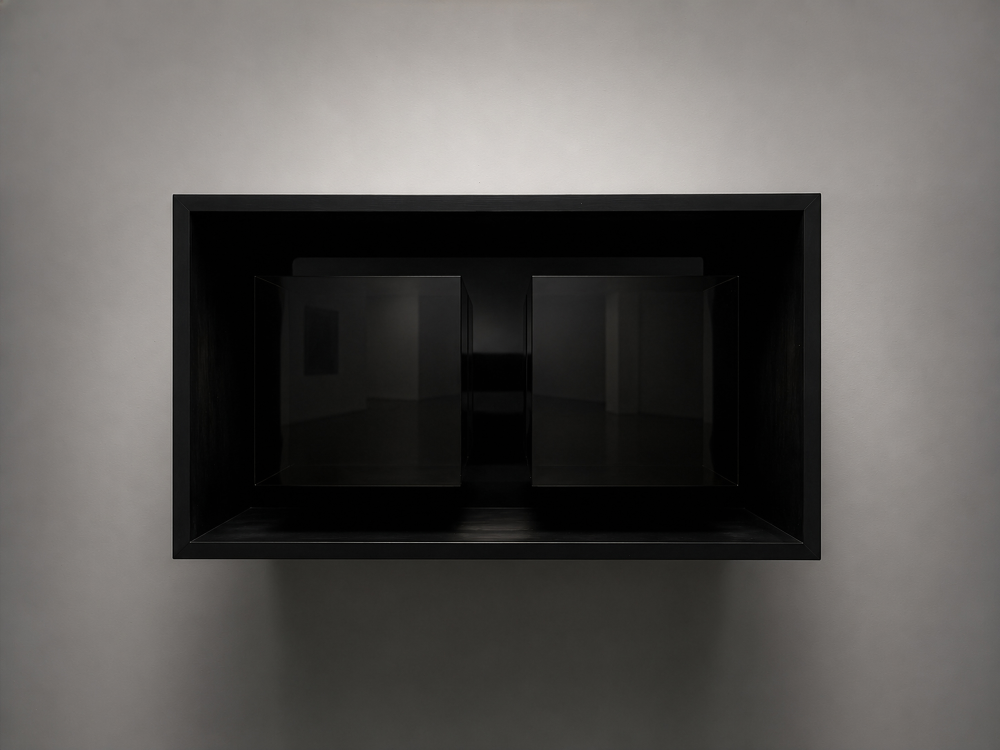
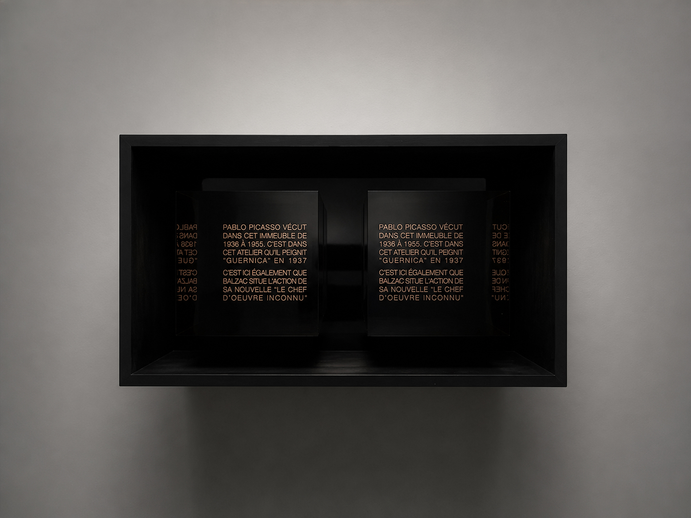
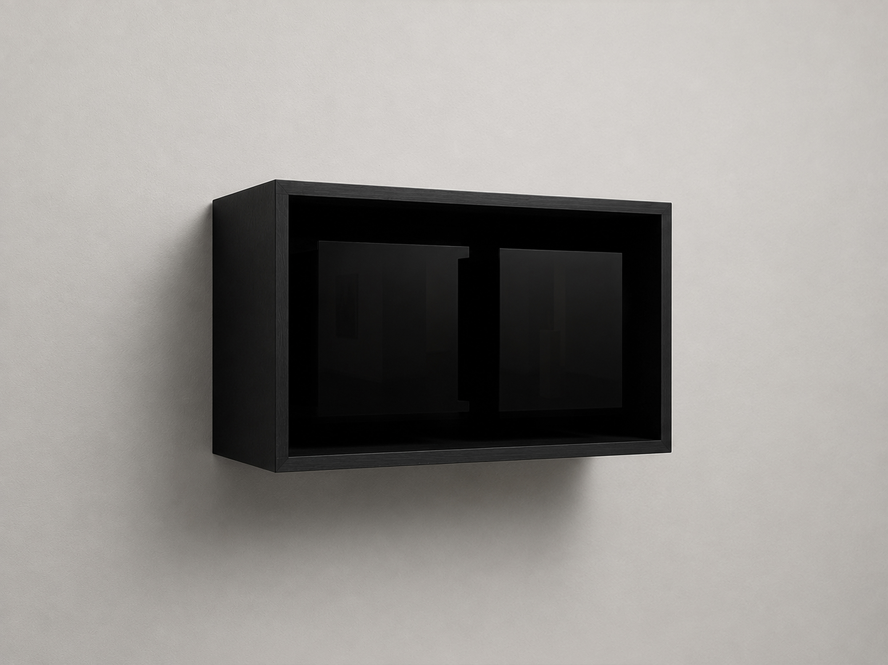
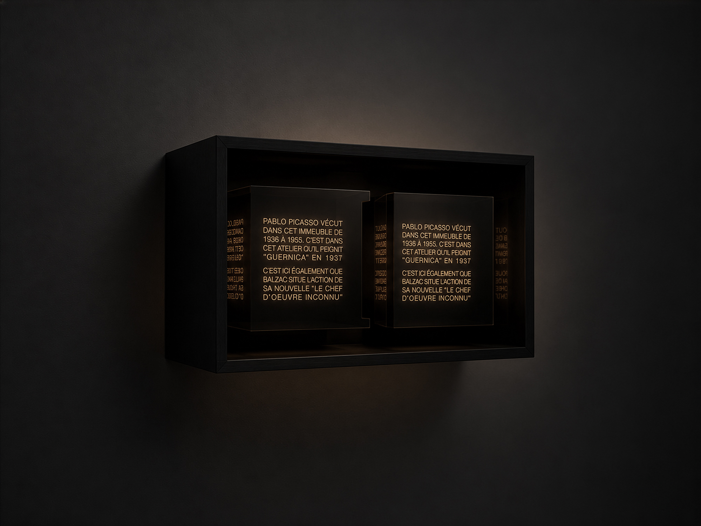

Ghost of Ghost
Modified Oldenburg sculpture.
Ghost of Ghost is a full-scale modified reconstruction of Claes Oldenburg and Patty Mucha’s 1964 work Soft Light Switches—Ghost Version-II. The modified sculpture retains the original's oversized slumped fabric form while introducing an internal mechanism of air, valves, motors, and electronics. Over the course of approximately an hour, the piece slowly inflates, sags, and partially collapses while the two toggles intermittently change position. These movements occur gradually and unevenly, sometimes becoming apparent only after looking away and returning. Although the addition of a mechanism brings the sculpture strangely closer to the object it represents, the familiar wall switch, its behavior remains detached from any useful function: no light is switched on, and the movements produce no clear result. Instead, the sculpture passes through a succession of subtly different states, at times appearing active and responsive and at others nearly inert. What initially presents as a static soft sculpture becomes difficult to hold as a stable image, changing slowly enough that it is not always clear when, or whether, something has happened.


With the internal light off (top) and on (bottom), revealing the engraved text.

